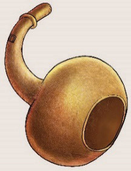
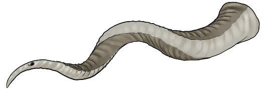
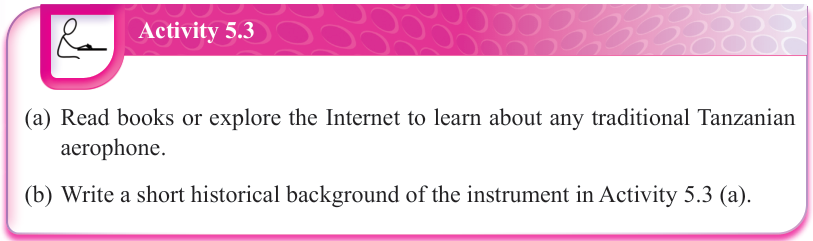

 |  | |
| Lipenenga | Lilandi | Baragumu |

Activity 5.3
(a) Read books or explore the Internet to learn about any traditional Tanzanian aerophone.
(b) Write a short historical background of the instrument in Activity 5.3 (a).
Membranophones
These are also referred to as drums. In some cases, they are termed as percussions.
They are musical instruments with a stretched membrane attached over the body of a tree or a tin. The membrane can be made from either natural animal skin or artificial materials like plastic. Membranophones vibrate to produce sound when the membrane is struck with a stick or hands.
Different types of drums can be found in various societies. For example, in Tanzania, there are drums such as msondo (Ruvuma, Lindi, Mtwara, Dar es Salaam), muheme (Dodoma), mbegete (Mara), kinganga, likuti (Lindi, Mtwara) and engoma (Kagera). Other drums are such as bass, snare, conga and bongo drums found in different parts of the world. There is also the djembe drum originated from West Africa, also used in other areas in the world. Figure 5.4 shows examples of membranophones.